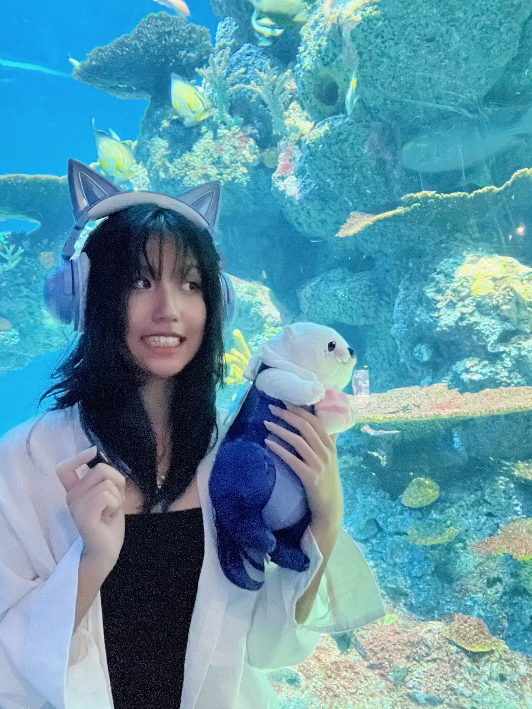
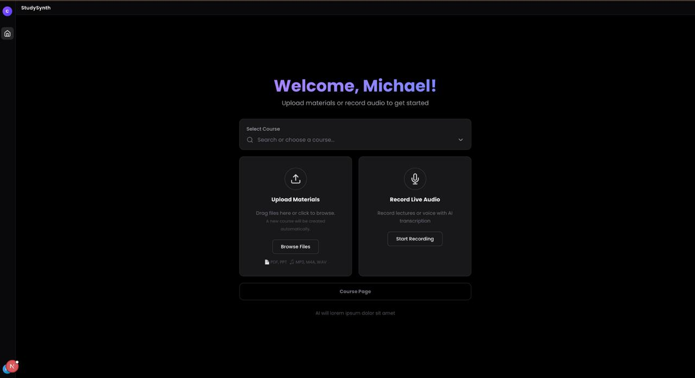
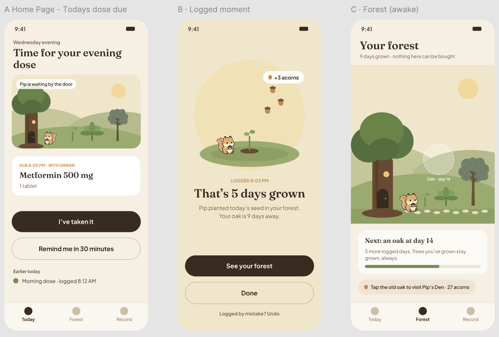
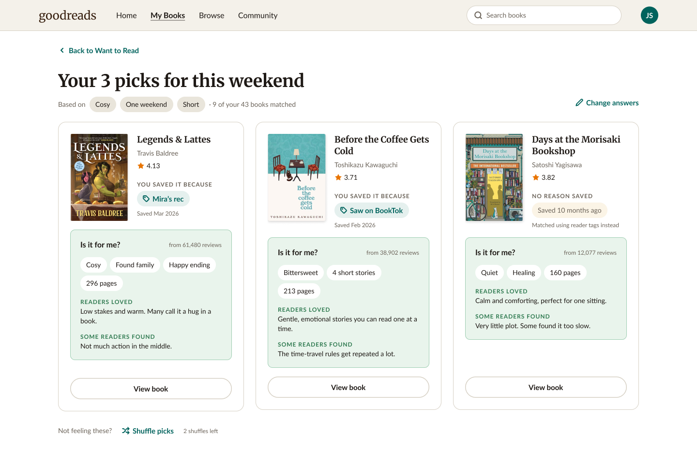

Find the flow
I turn ideas into focused journeys so people always know what comes next.
UI/UX designer & frontend developer
I design and build digital products, from early sketches to a working interface.
I combine interface craft, visual storytelling, and frontend thinking to make complex experiences feel focused, useful, and memorable.

Singapore · 202601 About
Hi, I’m Celine Emily, an Information Engineering and Media student at Nanyang Technological University. I care about the meeting point between thoughtful visuals and technology that works.
Outside product work, you’ll usually find me drawing, playing guitar, or looking for a quiet place to watch the stars.
02 Selected work
A selection of product, interaction, and visual-design projects shaped through intentional systems and detail-led execution.
Education technology
An AI-powered study companion that turns lecture material into summaries, quizzes, and useful teaching insights.
Explore the case study →
Game design
An online multiplayer deduction game currently in development using Unreal Engine 5 and Blender.
Explore the case study →UI/UX design
A Disney-themed cinema booking concept — every film is a Disney title, with a Google sign-in, a timed seat hold, and a QR-code ticket built into the flow.
Explore the case study →UI/UX design · Medication reminders
A medication reminder app concept that pairs dose logging with a growing forest and Pip the squirrel. I created the full concept, wireframes, and a 14-screen interactive prototype.
Explore the case study →
Small routines, gentle growthUI/UX design · Goodreads concept
A Goodreads feature that takes a Want to Read list of 40+ books down to three picks that fit tonight. In testing, 5 of 5 readers picked a book within 3 minutes, compared with 3 of 5 on Goodreads today.
Explore the case study →
From 40+ saved books to one for tonightApproach How I work
I turn ideas into focused journeys so people always know what comes next.
I use hierarchy, components, and states to make decisions feel consistent at every touchpoint.
I bring visual craft to the details that make a product feel clear, intentional, and alive.
03 Experience
UI/UX Designer
• Created illustrations for the medication reminder app.
• Designed user interfaces in Figma.
• Created UI assets aligned with the app’s branding guide.
AI Creative Tech Intern
• Automated content production workflows to improve efficiency and consistency across campaigns
• Prompt engineering to optimize AI-generated outputs for marketing and creative use cases
• Built a tool to automate clip downloading, streamlining content sourcing for the team
Media Intern
Created visual content for financial communication, bringing clarity and consistency to videos, digital assets, and marketing campaigns.
UI/UX Designer
Translated business needs into wireframes and polished interfaces, while advising on usability and design consistency across digital touchpoints.
04 Capabilities
I’m most at home where visual craft meets buildable product thinking—moving between Figma, feedback, and the browser with intention.
01 · Product UX
02 · Systems
03 · Build
04 · Visual craft
05 Visual exploration
Illustration keeps my eye tuned to composition, contrast, character, and the small details that shape how an interface feels.
06 Skills
“I’m most comfortable working at the boundary between design and engineering — where visual craft meets working code.”
Frontend
Design
Backend / Other
Soft skills
07 Contact
Have a UI/UX role, collaboration, or product idea in mind? I’d love to hear what you’re building.